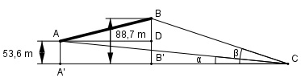
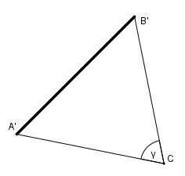

Aufgabe 189 Eine Brücke führt von A nach B über ein Tal. Von einem Punkt C im Tal aus erscheinen A und B unter den Höhenwinkeln α = 10,4° und β = 13,1° und die Strecke AB unter dem Horizontalwinkel γ = 78,8°. Berechnen Sie die Länge l der Brücke, wenn A 53,6 m und B 88,7 m höher liegt als C.

A’ und B’ sind die Projektionspunkte von A und B auf die Horizontalebene. Im Dreieck BB’C: 88,7 m tan β = --------- | *B’C’ B’C tan β * B’C = 88,7 m |:tan β 88,7 m 88,7 m B’C = ----------- = --------- = 381,2 m tan 13,1° 0,2327 Im Dreieck AA’C: 53,6 m tan α = --------- | *A’C A’C tan α * A’C = 53,6 m |:tan α 53,6 m 53,6 m A’C = ----------- = --------- = 292,1 m tan 10,4° 0,1835 In der Horizontalebene gilt:
Fall SWS: Cosinussatz: A’B’2 = A’C2 + B’C2 - 2 * A’C * B’C * cos γ A’B’2 = 292,12 + 381,22 - 2*292,1*381,2*cos 78,8° A’B’2 = 292,12 + 381,22 - 2*292,1*381,2*0,1942° A’B’2 = 187 388,1 |√ A’B’ = 432,9 m Im Dreieck ADB: Satz von Pythagoras: AD = A’B’ AB2 = AD2 + (88,7 m – 53,6 m)2 AB2 = 432,92 m2 + 35,12 m2 AB2 = 188 634,4 m2 |√ AB = 434,3 m = l